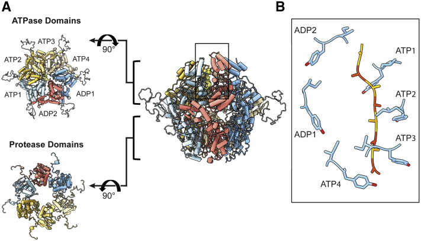

mitochondrial Lon protease complex
An oligomeric mitochondrial matrix protease assembly built from Lon-family subunits that combine AAA+ ATPase and serine-protease domains to process protein substrates. [DOI:10.1016/j.jbc.2022.101694]

NCBITaxon:4932) · Jie Yang, Albert S. Song, R. Luke Wiseman, Gabriel C. Lander; CC BY, via PubMed Central · CC_BY_4_0 · source: PMC PMC8913295.1 fig1 · DOI:10.1016/j.jbc.2022.101694Part of: mitochondrial matrix (GO:0005759)
Components
| Component | Type | Part of / acts on | Grounding | Genes | Stoichiometry | Essential | Role |
|---|---|---|---|---|---|---|---|
| Lon protease homologue, chloroplastic/mitochondrial | Protein | part of | InterPro:IPR027503 | PIM1, LON | Lon-family ATPase/serine-protease subunit class represented by yeast Pim1 in the mitochondrial oligomer. The family label also includes chloroplastic homologues; those are not mitochondrial examples here.
|
Organism-specific protein examples
Named proteins in which each component's role was established, with the organism the evidence comes from. The component above is the taxon-agnostic family; these are the specific entries behind it.
Lon protease homologue, chloroplastic/mitochondrial
| Accession | Protein | Gene | Organism | Entry |
|---|---|---|---|---|
UniProtKB:P36775 | Lon protease homolog, mitochondrial | PIM1 | Saccharomyces cerevisiae S288C (NCBITaxon:559292) | REVIEWED |
Role and evidence (1 reference)Reviewed reference sequence for the yeast mitochondrial Lon subunit, not an identifier for the entire oligomer.
| ||||
Canonical examples
NCBITaxon:4932Saccharomyces cerevisiae — Oligomeric Pim1 was isolated from mitochondria after overexpression in yeast. Its historical seven-subunit interpretation is retained as a preparation-specific conflict, not a fixed copy count. [DOI:10.1073/pnas.96.12.6787]NCBITaxon:559292Saccharomyces cerevisiae S288C — Reference-sequence organism, also assigned to the yeast protein entity in PDB 7SXO. The 2022 recombinant expression host was E. coli; this annotation does not establish an in situ S288C experiment. [UniProtKB:P36775]
Functions
- ATP-dependent peptidase activity
GO:0004176— Protein-substrate degradation by the mitochondrial Lon assembly; the curated intervention assay uses purified recombinant yeast protein and beta-casein.UniProtKB:P36775Reviewed enzyme annotation supports ATP-dependent proteolysis and mitochondrial matrix localization.DOI:10.1016/j.jbc.2022.101694Figure 3C and Methods assay beta-casein degradation in 5 mM ATP at 37 C. This assay does not independently measure ATP hydrolysis coupling or identify a physiological yeast substrate.
Mechanism graphs
Yeast Pim1 assembly and proteolysis interventions (FUNCTION)
Structural membership and mutant effects on purified-protein beta-casein degradation.
| Subject | Predicate | Object | Evidence |
|---|---|---|---|
| Lon protease homologue, chloroplastic/mitochondrial | forms | mitochondrial Lon protease complex |
|
| mitochondrial Lon protease complex | catalyzes | ATP-dependent peptidase activity |
|
| Pim1 S1015A substitution | impairs | ATP-dependent peptidase activity |
|
| Pim1 charged-insertion deletion | retains assayed activity | ATP-dependent peptidase activity |
|
| Pim1 charged-insertion GS-linker replacement | retains assayed activity | ATP-dependent peptidase activity |
|
Discussions
- INTERPRETATION (RESOLVED): Distinguish the mitochondrial oligomer from its protein subunit, substrates and related proteases. Pim1 is a single gene product but forms a structurally resolved oligomer. The InterPro family includes chloroplastic proteins; matrix Lon is distinct from membrane-anchored i-AAA and m-AAA complexes.
- CURATION_TODO (OPEN): Reconcile historical seven-subunit and modern six-subunit Pim1 preparations without assuming a universal native oligomer. The 1999 study interpreted a seven-subunit ring from mass measurements and electron microscopy of C-terminally His-tagged protein overexpressed in yeast and purified from mitochondria, including cross-linked preparations. The 2022 structure instead resolves six subunits of mature N-terminally His-tagged yeast protein expressed in bacteria and frozen with ATPgammaS and copurified substrate.
- INTERPRETATION (RESOLVED): Resolve the paper's inconsistent structural accessions against native archives. The primary Data availability section lists EMD-25505 and PDB 7XSO. Native matching records are EMD-25502 and PDB 7SXO; each cites the exact Pim1 publication and crosslinks the other.
- CURATION_TODO (OPEN): Reconcile publication and archive detail differences before asserting exact substrate or construct boundaries. The article describes a nine-residue polyalanine substrate model, whereas the native PDB entity is a 12-residue unknown sequence. The paper reports approximately 3.21 angstrom resolution versus the archive's 3.3 angstrom. Methods begin the construct at Met182 while the figure schematic labels 181, and Figure 1's pore-loop residue notation is internally inconsistent.
- CURATION_TODO (OPEN): Test the insertion and C-terminal extension with physiological substrates or binding partners. The insertion mutants retain beta-casein degradation in vitro, but that does not establish native dispensability. Substrate/adaptor recruitment, DNA binding, peptide exit and a requirement for substrate in hexamerization are hypotheses in the inspected study. The C-terminal Results heading is stronger than the supporting experiments and Discussion.
Datasets
- Cryo-EM structure of substrate-translocating S. cerevisiae Lon (PIM1) (
PDB:7SXO) · OTHER · STRUCTURAL_IMAGING
Organism: Saccharomyces cerevisiae S288C (NCBITaxon:559292) · Platform: Single-particle cryo-EMAssembly 1 contains six Pim1 chains A-F and an additional substrate chain G. Its global A6B1 heptameric annotation counts substrate, not seven Pim1 subunits. The model annotates four ATP and two ADP molecules; this is distinct from ATPgammaS used in preparation.
Native entry, polymer entities and assembly inspected. Entity 1 maps to UniProt P36775 and taxon 559292. Entity 2 is a 12-residue unknown-sequence substrate annotated to the E. coli host, but its biological identity is not established. No coordinates are hosted; construct mass and map resolution are not canonical biological properties.
https://www.rcsb.org/structure/7SXONative archive crosslinks EMD-25502 and matches the primary title, authors, DOI and PMID. Archive resolution is 3.3 angstrom; the paper reports approximately 3.21 angstrom.
- Cryo-EM structure of substrate-translocating S. cerevisiae Lon (PIM1) (
EMDB:EMD-25502) · OTHER · STRUCTURAL_IMAGING
Organism: Saccharomyces cerevisiae (NCBITaxon:4932) · Platform: Talos Arctica at 200 kV with a Gatan K2 detectorNative archive reports 3.3 angstrom resolution and links the yeast Pim1 atomic model. This is a purified recombinant preparation, not an in situ mitochondrial image.
Full native XML header SHA-256 621e50e914f5184d6f0d6cb5903e4e525221f3dfd703fccc9145befeb9270793. No map is copied into the repository.
https://www.ebi.ac.uk/emdb/EMD-25502Released archive metadata independently matches the primary DOI, PMID, title, authors and PDB 7SXO.
Evidence
DOI:10.1016/j.jbc.2022.101694Yang and colleagues (2022), PMID 35143841, PMC8913295.1. Results, Discussion, Methods, Data availability, all main-figure captions and actual Figures 1-3 inspected. This record uses the yeast experiments, not bacterial or human comparison structures as yeast evidence.DOI:10.1073/pnas.96.12.6787Stahlberg and colleagues (1999), PMID 10359790. Publisher main text and figure captions inspected. Mitochondrial isolation supports native compartment assignment; the historical oligomer interpretation remains explicitly unresolved.UniProtKB:P36775Reviewed native protein record independently supports mitochondrial matrix location.GO:1905368Verified active cellular-component term peptidase complex supplies a broader is-a parent, not exact identity.GO:0005759Verified active cellular-component term mitochondrial matrix supplies compartment parthood, not an is-a relationship.
Curation history
2026-10-05T01:44:41Zcodex · CREATED_RECORD — Scaffolded by scripts/new_record.py2026-10-05T01:52:54Zcodex · EXPANDED_RECORD — Added yeast-scoped protein-family and reference-sequence grounding, assay-bounded causal edges, verified structural datasets, a CC BY 4.0 figure, and explicit oligomer/source-provenance conflicts.
Source: data/structures/other/mitochondrial_lon_protease_complex.yaml